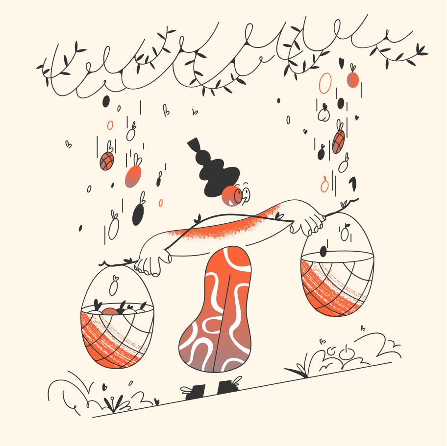

Vicky Reyes
 Author: Vicky Reyes on 03-29-2020
Author: Vicky Reyes on 03-29-2020
I am trying to learn the best practices on how to build responsive websites.
I am learning to be a proper Front End Web Developer without breaking the bank or any breakable bones when I type my card number. It is my dream job, and the only career I can see that will let me have a remote position-an excellent opportunity for me to do what I want while taking care of my beloved husband.
I am trying to learn the best practices on how to build responsive websites. After taking this course, I will build this website that I created for this Nanodegree program in Udacity into a WordPress site.
Hopefully, make it downloadable so anyone can avail it for free.
Keep on Learning.
